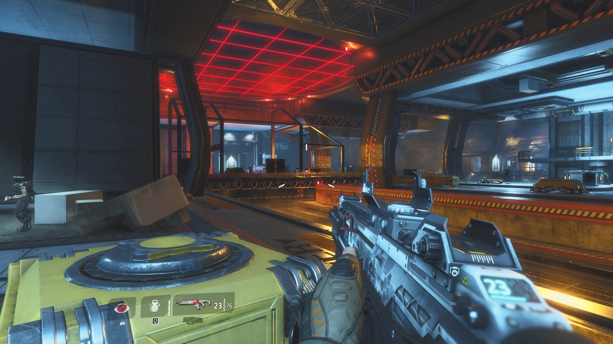

泰坦陨落 2 战役辅助:功能、用法与下载
给泰坦陨落 2 单人战役做的辅助:屏幕上的透视方框,加上按住右键把准星拉到最近敌人头部。战役流程里省得跟枪。
只用于单人战役。多人(官方服、Northstar 社区服)请不要用。
从 v1.1 起包内自带战役闸门:只有当前关卡是战役关卡时才启用,主菜单和多人对局一律不启用(实机验过:战役 campaign=1、多人大厅 campaign=0)。这是为了不让它在别人的对局里生效,不是给你绕过它的理由。
功能
- 透视方框:视野内敌人的方框和血条,墙后同样显示(不做遮挡判断,见下面的限制)。
- 自动瞄准:按住鼠标右键时,准星自动拉到离准星最近的敌人头部;松开右键立刻把视角还给你,不拖着走。
- 扳机机器人(F5):准星压住敌人时自动开火。开着它的时候自动瞄准会持续生效,用来跟连发后的枪口上跳对抗。
- 头点标定(F6 / F7):觉得打得偏高或偏低,当场把瞄准点降一点 / 抬一点。分「铁驭」和「泰坦」两套值,调完自动记住,下次进游戏不用重调。
- 诊断键(F8 / F9 / F10):把当前目标、附近实体、开镜状态写进日志。出问题把日志发我,我基本能定位。
截图

下载
SHA256:
文件内容与校验值另见 项目与下载。包里共 3 个文件:wsock32.dll(加载器)、tf2aim.dll(功能本体)、一份中文 README.txt。安装 = 把前两个复制进游戏目录的 bin\x64_retail\,游戏启动时自行加载,没有需要手动运行的程序。
装之前先确认
| 项目 | 要求 |
|---|---|
| 游戏版本 | v2.0.11.0(Steam 版 / EA App 版都一样) |
| 系统 | Windows 10 / 11 64 位 |
| 运行库 | 不需要装任何运行库、不需要编译器 |
| 使用范围 | 仅单人战役 |
怎么用
- 把压缩包里的
wsock32.dll和tf2aim.dll复制到游戏目录的bin\x64_retail\,例如C:\Program Files (x86)\Steam\steamapps\common\Titanfall2\bin\x64_retail\。 - 启动游戏,进战役,能走动、能看到敌人为止。方框直接出来;按住鼠标右键开始锁头。
- 确认加载成功:同一个目录里会出现
tf2aim_proxy.log(加载器生效)和tf2-aimbot.log(本体日志)。
包里的 README.txt 有更完整的说明和排错。tf2-aimbot.log 的前三行就是自检结果:
tf2aim init: game=ok hook=ok
tf2aim esp: hooked
gate: level=sp_boomtown campaign=1前两行说明插件接上了游戏(出现 FAIL 基本就是游戏版本对不上);第三行是战役闸门的判定 —— campaign=1 才表示当前关卡是战役图、功能已启用。关卡名随关卡变化,数值一直不准就看下面「已知限制」。
热键
| 键 | 作用 |
|---|---|
| 鼠标右键(按住) | 自动瞄准:锁离准星最近的敌人头部;松开立刻失效 |
| F5 | 扳机机器人开关(自动开火) |
| F6 / F7 | 把瞄准点降 1 / 抬 1(只影响当前锁定的目标类别:铁驭或泰坦) |
| F8 | 把当前目标的身体判定信息打进日志 |
| F9 | 把身边最近的若干实体(类名 / 阵营 / 血量)打进日志 |
| F10 | 开镜状态诊断 |
已知限制(装之前先看)
- 只支持 v2.0.11.0。游戏一更新就可能失效,等新版包即可 —— 不要自己去改包里的文件。
- 不做遮挡判断:墙后的敌人也会被框住,也会被当成锁定目标。选目标只按「离准星最近」算。
- 方框尺寸在个别带镜武器开镜时可能不跟着缩放。
- 只有方框和血条,没有名字、没有距离文字。
- 闸门看的是关卡名:如果有人把自定义地图刻意命名成战役图的名字,闸门会被骗过 —— 那种情况下请自己判断要不要用。另外它在客户端,技术上是可以被人改掉的;这不是安全机制,是「别在别人的对局里生效」的保险。
- 放错了目录不会生效(实测:只有
bin\x64_retail\会被加载,游戏根目录那份无效)。判断依据是那个目录里有没有tf2aim_proxy.log。 - 不想要了就关掉游戏,把复制的两个
.dll删掉(顺带删掉那两个.log)。不要在游戏运行时删。
出问题先看这几条
- 复制进去了但游戏里没反应:看
bin\x64_retail\里有没有tf2aim_proxy.log。没有就是加载器没生效 —— 确认两个 dll 都在这个目录里(不是游戏根目录)。 - 有
tf2aim_proxy.log但没方框:看tf2-aimbot.log的前两行,出现FAIL就是游戏版本不对。 - 进了战役还是没启用:看
tf2-aimbot.log里gate:那行的campaign=。若是0,说明读到关卡名但它不在白名单里(或游戏更新改了那个字段),把两行日志发我即可定位。 - 杀毒软件报警:
wsock32.dll这类代理加载器被误报很常见 —— 它做的事就是把系统网络的调用转发给真身,顺手载入同目录的tf2aim.dll。不放心就别用。
更新记录
- v1.1(2026-10-11) —— 加载方式改为复制文件(
wsock32.dll代理),不再需要注入器与批处理;新增战役闸门,只有战役关卡才启用(实机验证:战役启用 / 多人大厅与主菜单不启用);安装目录确认为bin\x64_retail\。 - v1.0(2026-09-21) —— 首个对外发布的包:透视方框 + 血条、按住右键锁头、扳机机器人、头点现场标定、诊断日志。
风险
这个包只做单人战役里的事,并且自带闸门:非战役关卡一律不启用。但「用第三方工具」本身可能违反游戏服务条款,账号风险由使用者承担。请不要在多人对局里使用,也不要把日志或截图发到多人相关的社区里。